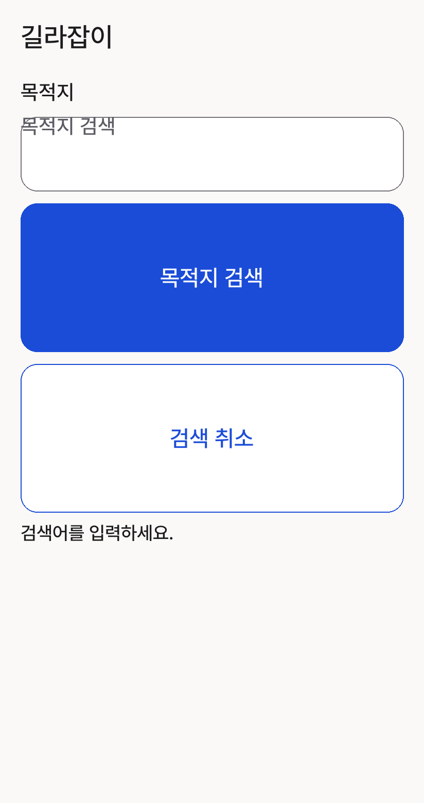
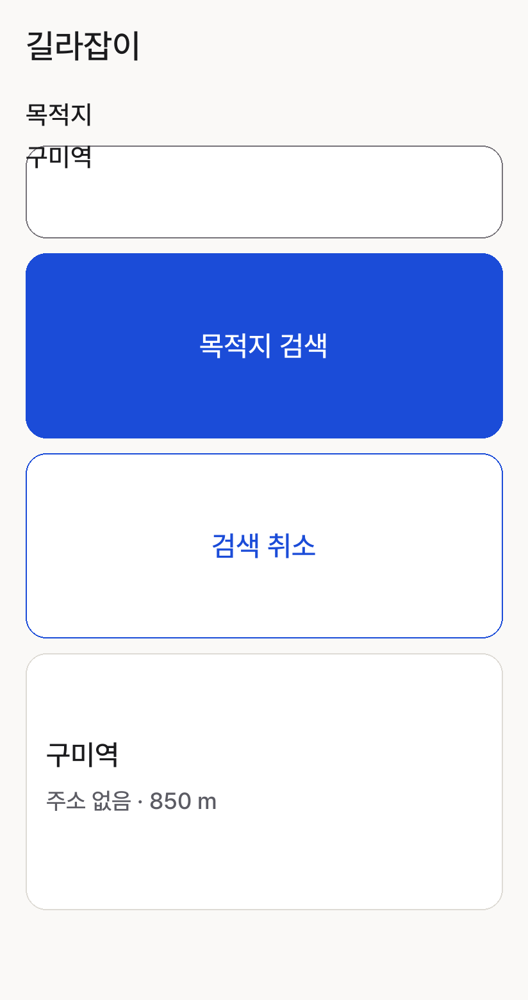
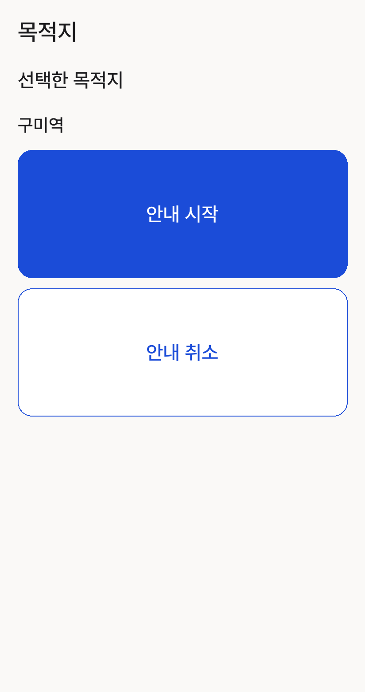
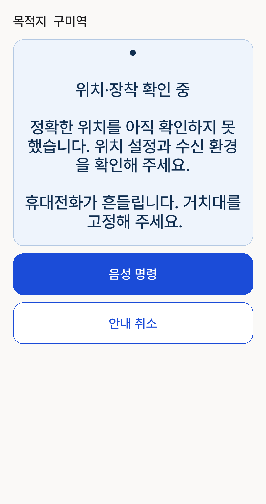
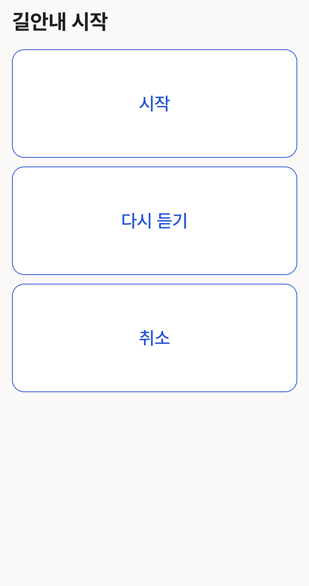
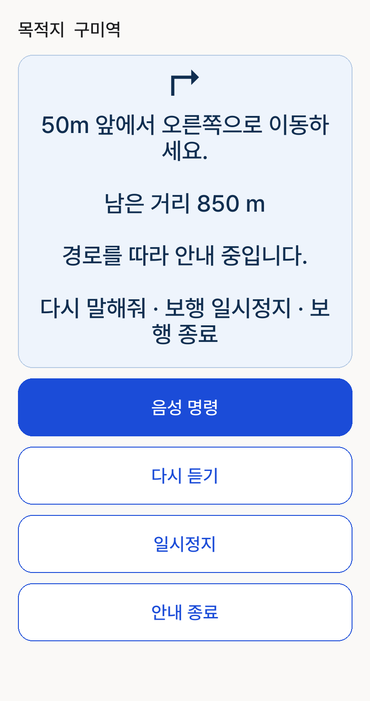
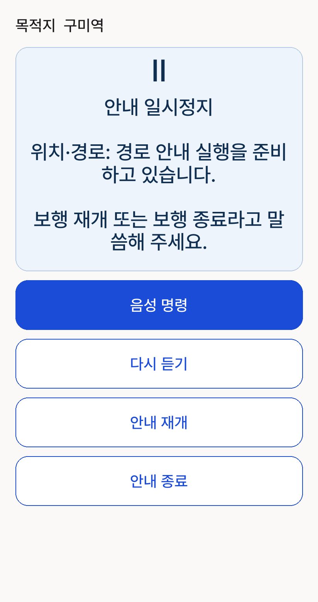
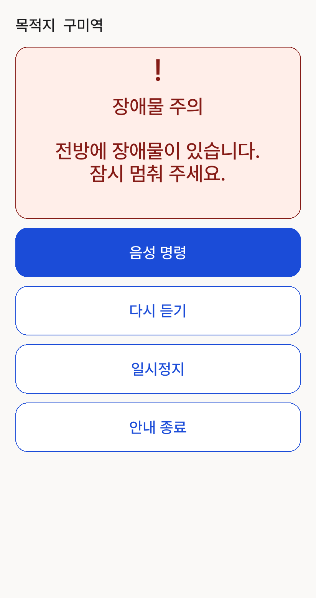
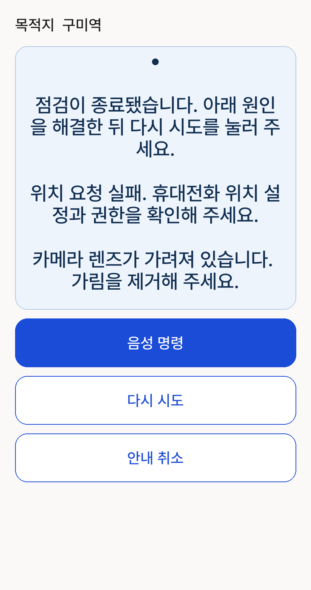
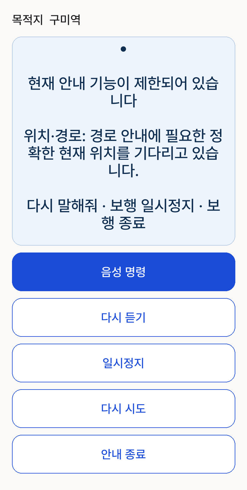

목적지 검색
검색 가능, 검색어 없음. 키보드·시스템 UI 제외.

Android 캡처 아님. 412dp·글자 1배 기준. 목적지·거리 등은 예시이며 세부 줄바꿈과 시스템 UI는 실제 기기와 다를 수 있습니다.
검색 가능, 검색어 없음. 키보드·시스템 UI 제외.

목적지·주소·거리 값은 샘플. 결과 1개, 더보기 숨김. 전체 스크롤 콘텐츠.

DESTINATION_CONFIRM 뷰 구성. 실제 진입 경로별 노출 여부는 별도이며 구미역은 샘플.

준비 상태, GPS 미확인·흔들림 조건. 다시 듣기/일시정지 숨김.

최신 본문 제거 코드. 제목+시작/다시 듣기/취소.

목적지·경로 지시·남은 거리만 샘플 값. 활성 경로, 재시도 없음.

일시정지 및 경로 준비 메시지 조건 예시. 실제 원인에 따라 내용/다시 시도 노출 변동.

유효한 currentGuidanceRisk가 있는 상태. FeedbackAction.message는 예시이며 객체별로 달라짐.

점검 실패+위치 요청 실패+렌즈 가림 조건 예시.

세션 ACTIVE, 신뢰 위치 없음, 카메라 출력 불가, 준비 작업 없음.
